폐기물처리산업기사 (2017-03-05 기출문제)
1과목: 폐기물개론
1. 쓰레기의 입도를 분석하였더니 입도누적 곡선상 10%, 30%, 60%, 90%의 입경이 각각 2mm, 5mm, 10mm, 20mm일 때 곡률계수는?
- 2.75
- 2.25
- 1.75
- 1.25
(정답률: 68%)

2. RCRA 분류체계와 관계없는 것은?
- 부식성
- 인화성
- 독성
- 오염성
(정답률: 66%)
3. 생활폐기물의 발생량을 나타내는 발생원 단위로 가장 적합한 것은?
- kg/capita·day
- ppm/capita·day
- m3/capita·day
- L/capita·day
(정답률: 86%)
4. 폐기물을 분쇄하거나 파쇄하는 목적이 아닌 것은?
- 겉보기비중의 감소
- 유가물의 분리
- 비표면적의 증가
- 입경분포의 균일화
(정답률: 76%)
5. 슬러지의 함유수분 중 가장 많은 수분함유도를 유지하고 있는 것은?
- 표면부착수
- 모관결합수
- 간극수
- 내부수
(정답률: 73%)
6. 채취한 쓰레기 시료에 대한 성상분석을 위한 절차 중 가장 먼저 실시하는 것은?
- 건조
- 분류
- 전처리
- 밀도측정
(정답률: 95%)
7. 도시의 폐기물 수거량이 2,000,000ton/year이며, 수거인부는 1일 3,255명이고, 수거 대상 인구는 5,000,000인이다. 수거인부의 일 평균작업시간은 5시간이라고 할 때, MHT는? (단, 1년의 365일 기준)
- 1.83
- 2.97
- 3.65
- 4.21
(정답률: 72%)
8. 한 가구 평균가족수가 4인으로 구성된 75,000세대 아파트 단지에서 쓰레기 수거상황을 조사한 결과가 다음과 같은 조건일 때 1인 1일 쓰레기 발생량(kg/인·일)은 얼마인가?
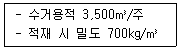
- 약 0.6
- 약 0.8
- 약 1.2
- 약 1.6
(정답률: 60%)
9. 적환장에서 폐기물을 차량에 적재하는 데 사용하는 방법이 아닌 것은?
- 직접투하(direct discharge)
- 저장투하(storage discharge)
- 압축투하(compact discharge)
- 직접·저장투하(direct and storage discharge)
(정답률: 80%)
10. 발열량과 발열량 분석에 관한 설명으로 틀린 것은?
- 발열량은 쓰레기 1kg을 완전연소시킬 때 발생하는 열량(kcal)을 말한다.
- 고위발열량(Hh)은 발열량계에서 측정한 값에서 물의 증발잠열을 뺀 값을 말한다.
- 발열량 분석은 원소분석 결과를 이용하는 방법으로 고위발열량과 저위발열량을 추정할 수 있다.
- 저위발열량(Hl, kcal/kg)을 산정하는 방법은 Hh－600(9H＋W)을 사용한다.
(정답률: 77%)
11. 밀도 680kg/m3인 쓰레기 200kg이 압축되어 밀도가 960kg/m3으로 되었다면 압축비는?
- 약 1.1
- 약 1.4
- 약 1.7
- 약 2.1
(정답률: 78%)
12. 파쇄 시 발생하는 분진을 제거하기 위한 집진시설에서는 가연성 위험물과 충돌, 마찰에 의해서 분진폭발이 일어날 수 있다. 이에 대한 일반적인 대책으로 틀린 것은?
- 집진유속을 낮춘다.
- 폭풍유도구를 설치한다.
- 살수노즐을 설치한다.
- 산소농도를 20% 이하로 유지한다.
(정답률: 67%)
13. 쓰레기의 발생량 조사방법이 아닌 것은?
- 경향법
- 적재차량 계수분석법
- 직접계근법
- 물질수지법
(정답률: 86%)
14. 고형분이 50%인 음식쓰레기 10ton을 소각하기 위해 수분 함량을 20%가 되도록 건조시켰다. 건조된 쓰레기의 최종 중량(ton)은? (단, 비중은 1.0 기준)
- 약 3.0ton
- 약 4.1ton
- 약 5.2ton
- 약 6.3ton
(정답률: 62%)
15. 폐기물의 퇴비화 조건이 아닌 것은?
- 퇴비화하기 쉬운 물질을 선정한다.
- 분뇨, 슬러지 등 수분이 많을 경우 Bulking Agent를 혼합한다.
- 미생물 식종을 위해 부숙 중인 퇴비의 일부를 반송하여 첨가한다.
- pH가 5.5 이하인 경우 인위적인 pH 조절을 위해 탄산칼슘을 첨가한다.
(정답률: 72%)
16. 폐기물 재활용 정책 중 EPR의 의미로 가장 적절한 것은?
- 폐기물 자원화 기술개발 제도
- 생산자 책임 재활용 제도
- 재활용 제품 소비 촉진 제도
- 고부가 자원화 사업 지원 제도
(정답률: 87%)
17. 폐기물 처리대책의 기본방향으로 가장 거리가 먼 것은?
- 무해화
- 발생억제
- 재생이용
- 다량소비
(정답률: 90%)
18. 폐기물선별법 중 와전류분리법으로 선별하기 어려운 물질은?
- 구리
- 철
- 아연
- 알루미늄
(정답률: 66%)
19. 폐기물 수거의 효율성을 향상시키기 위해 적환장 설치 위치를 선정할 때, 고려사항으로 틀린 것은?
- 쉽게 간선도로에 연결되며, 2차 보조 수송수단으로 연결이 쉬운 곳
- 건설비와 운영비가 적게 들고 경제적인 곳
- 수거 쓰레기 발생지역의 무게중심에서 가능한 한 먼 곳
- 주민의 반대가 적고, 환경적 영향이 최소인 곳
(정답률: 80%)
20. 건설재료로 재이용이 불가능한 폐기물의 형태는?
- 슬래그
- 소각재
- 탈수된 하수슬러지
- 무기성 슬러지
(정답률: 69%)
2과목: 폐기물처리기술
21. 일시적으로 다량의 분뇨가 소화조에 투입되었을 경우에 발생하는 장애의 설명으로 틀린 것은?
- 소화조 내의 부하가 불균등하게 되어 안정된 처리조건을 유지하기 어렵다.
- 소화조 내의 가스압이 저하한다,
- 소화조 내의 온도가 저하한다.
- 탈리액의 인출이 불균등하게 된다.
(정답률: 63%)
22. CO 10kg을 완전연소시킬 때 필요한 이론적 산소량(Sm3)은?
- 4
- 6
- 8
- 10
(정답률: 48%)
23. 폐기물 고화처리방법 중 자가시멘트법의 장ㆍ단점으로 틀린 것은?
- 혼합률이 높은 단점이 있다.
- 중금속 저지에 효과적인 장점이 있다.
- 탈수 등 전처리가 필요 없는 장점이 있다.
- 보조에너지가 필요한 단점이 있다.
(정답률: 60%)
24. 다음 물질 중 표면연소가 되는 물질은?
- 플라스틱
- 나무
- 석유
- 무연탄
(정답률: 76%)
25. 분뇨처리 중 토사트랩에 걸린 침사를 제거하는 데 쓰이는 장치가 아닌 것은?
- 진공펌프
- 그래뉼펌프
- Sand 펌프
- Basket형 운반장치
(정답률: 62%)
26. 도시 생활쓰레기를 처리하는 데 가장 부적합한 소각로는?
- 화격자식
- 습식 산화식
- 유동상식
- 회전로식
(정답률: 63%)
27. 분뇨 저장탱크 내에 악취발생 공간 체적이 100m3이고, 이를 시간당 2차례씩 교환하고자 한다. 발생된 악취공기를 퇴비여과방식을 채용하여, 투과속도 15m/hr로 처리하고자 한다면 필요한 퇴비 여과상의 면적(m2)은?
- 약 8
- 약 10
- 약 13
- 약 18
(정답률: 58%)
28. 건조된 슬러지 고형분의 비중이 1.28이며, 건조 이전의 슬러지 내 고형분 함량이 35%일 때 건조 전 슬러지의 비중은?
- 약 1.038
- 약 1.083
- 약 1.118
- 약 1.127
(정답률: 66%)
29. 폐기물 매립지의 침출수 처리방법 중 혐기성 공정의 장점으로 옳지 않은 것은?
- 고농도의 침출수를 희석 없이 처리할 수 있다.
- 미생물의 낮은 증식으로 인하여 슬러지 처리비용이 감소된다.
- 호기성 공정에 비하여 낮은 영양물 요구량을 갖는다.
- 호기성 공정에 비하여 온도에 대한 영향이 적다.
(정답률: 34%)
30. 소각 시 탈취방법인 촉매연소법의 장점이 아닌 것은?
- 제거효율이 좋다.
- 처리경비가 저렴하다.
- 저농도 유해물질 처리도 가능하다.
- 처리대상 가스의 제한이 없다.
(정답률: 60%)
31. 수분을 증발시키는 데 소요되는 기화잠열(kcal/L)은?(오류 신고가 접수된 문제입니다. 반드시 정답과 해설을 확인하시기 바랍니다.)
- 539
- 459
- 359
- 80
(정답률: 51%)
32. C70H130O40N5의 분자식을 가진 물질 100kg이 완전히 혐기분해될 때 생성되는 이론적 암모니아의 부피(Sm3)를 아래 식을 이용하여 계산하면?
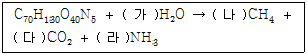
- 3.7
- 4.7
- 5.7
- 6.7
(정답률: 39%)
33. 굴뚝에 설치되며 보일러 전열면을 통하여 연소가스의 여열로 보일러 급수를 예열함으로써 보일러의 효율을 높이는 장치는?
- 재열기
- 절탄기
- 과열기
- 공기예열기
(정답률: 68%)
34. 매립지에서의 분해반응과 가장 관련이 적은 것은?
- C/N
- 수분량
- 폐기물밀도
- 폐기물조성
(정답률: 49%)
35. 쓰레기와 슬러지를 합성하여 퇴비화할 경우에 관한 설명으로 틀린 것은?
- 미생물의 접종효과가 있다.
- Bulking Agent 역할을 쓰레기가 할 수 있다.
- 슬러지에 함유될 수 있는 유독물질 여부의 점검이 필요하다.
- 쓰레기 단독으로 퇴비화할 때보다 통기성이 좋다.
(정답률: 74%)
36. 생활폐기물 매립장에서 발생하는 침출수의 특성에 관한 설명으로 틀린 것은?
- 매립 초기에는 침출수의 pH가 약알칼리성이며, 매립연한이 오래된 경우에는 약산성을 나타낸다.
- 매립 초기에는 생분해성이 높은 유기물의 함량이 높은 반면, 매립연한이 오래된 경우에는 난분해성 유기물 함량이 높다.
- 침출수의 수질은 연차별, 계절별로 변화한다.
- 통상 침출수의 암모니아성 질소 농도는 상당기간 동안 높은 값을 보인다.
(정답률: 70%)
37. 빈 용기 보증금제도하에서 주류용기의 미회수율이 16%라고 할 때 주류용기의 재사용횟수는?
- 4회
- 7회
- 10회
- 13회
(정답률: 60%)
38. 축분과 톱밥 쓰레기를 혼합한 후 퇴비화하여 함수량 20%의 퇴비를 만들었다면 퇴비량(ton)은? (단, 퇴비화 시 수분 감량만 고려, 비중=1.0)
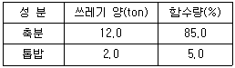
- 4.63ton
- 5.23ton
- 6.33ton
- 7.83ton
(정답률: 44%)
39. 매립지로부터 가스가 발생될 것이 예상되면 발생가스에 대한 적절한 대책이 수립되어야 한다. 이 중 최소한의 환기설비 또는 가스대책설비를 계획하여야 하는 경우와 가장 거리가 먼 것은?
- 발생가스의 축적으로 덮개설비에 손상이 갈 우려가 있는 경우
- 식물 식생의 과다로 지중 가스 축적이 가중되는 경우
- 유독가스가 방출될 우려가 있는 경우
- 매립지 위치가 주변 개발지역과 인접한 경우
(정답률: 78%)
40. 호기성 퇴비화 설계 운영 고려인자인 C/N비에 관한 내용으로 옳은 것은?
- 초기 C/N비 5~10이 적당하다.
- 초기 C/N비 25~50이 적당하다.
- 초기 C/N비 80~150이 적당하다.
- 초기 C/N비 200~350이 적당하다.
(정답률: 84%)
3과목: 폐기물 공정시험 기준(방법)
41. 원자흡수분광광도법으로 수은을 분석할 경우 시료채취 및 관리에 관한 설명으로 ( )에 들어갈 알맞은 말은?
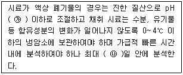
- ㉮ 2, ㉯ 14
- ㉮ 3, ㉯ 24
- ㉮ 2, ㉯ 28
- ㉮ 3, ㉯ 32
(정답률: 74%)
42. 노말헥산 추출시험방법에 의한 기름성분 함량 측정 시 증발용기를 실리카겔 데시케이터에 넣고 정확히 얼마 동안 방냉 후 무게를 측정하는가?
- 30분
- 1시간
- 2시간
- 4시간
(정답률: 67%)
43. 아포균검사법에 의한 감염성 미생물의 분석방법으로 틀린 것은?
- 표준지표생물 포자가 104개 이상 감소하면 멸균된 것으로 본다.
- 온도가 (32±1)℃ 또는 (55±1)℃ 이상 유지되는 항온배양기를 사용한다.
- 표준지표생물의 아포밀도는 세균현탁액 1mL에 1 × 104개 이상의 아포를 함유하여야 한다.
- 시료의 채취는 가능한 한 무균적으로 하고 멸균된 용기에 넣어 2시간 이내에 실험실로 운반·실험하여야 하며, 그 이상의 시간이 소요될 경우에는 10℃ 이하로 냉장하여 4시간 이내에 실험실로 운반하고 실험실에 도착한 후 2시간 이내에 배양조작을 완료하여야 한다.
(정답률: 72%)
44. 강도 Io의 단색광이 정색 용액을 통과할 때 그 빛의 80%가 흡수된다면 흡광도는?
- 0.6
- 0.7
- 0.8
- 0.9
(정답률: 57%)
45. 시료의 전처리방법 중 유기물 함량이 비교적 높지 않고 금속의 수산화물, 산화물, 인산염 및 황화물을 함유하고 있는 시료에 적용되는 방법에 사용되는 산은?
- 질산, 아세트산
- 질산, 황산
- 질산, 염산
- 질산, 과염소산
(정답률: 70%)
46. 자외선/가시선 분광법에 의한 시안시험방법에서 방해물 제거방법으로 사용되지 않는 것은?
- 유지류는 pH 6 ~ 7로 조절하여 클로로폼으로 추출
- 유지류는 pH 6 ~ 7로 조절하여 노말헥산으로 추출
- 잔류염소는 질산은을 첨가하여 제거
- 황화물은 아세트산아연 용액을 첨가하여 제거
(정답률: 63%)
47. 편광현미경과 입체현미경으로 고체 시료 중 석면의 특성을 관찰하여 정성과 정량 분석할 때 입체현미경의 배율범위로 가장 옳은 것은?
- 배율 2 ~ 4배 이상
- 배율 4 ~ 8배 이상
- 배율 10 ~ 45배 이상
- 배율 50 ~ 200배 이상
(정답률: 83%)
48. 자외선/가시선 분광법으로 크롬 측정 시 크롬이온 전체를 6가 크롬으로 산화시키기 위해 가하는 산화제는?
- 과산화수소
- 과망간산칼륨
- 중크롬산칼륨
- 염화제일주석
(정답률: 76%)
49. 수소이온농도－유리전극법에 관한 설명으로 틀린 것은?
- 시료의 온도는 pH 표준액의 온도와 동일한 것이 좋다.
- 반고상 폐기물 5g을 100mL 비커에 취한 다음 정제수 50mL를 넣어 30분 이상 교반, 침전 후 사용한다.
- 고상 폐기물 10g을 50mL 비커에 취한 다음 정제수 25mL를 넣어 잘 교반하여 30분 이상 방치한 후 이 현탁액을 시료용액으로 한다.
- pH 미터는 전원을 넣은 후 5분 이상 경과 후에 사용한다.
(정답률: 70%)
50. 중량법으로 폐기물의 강열감량 및 유기물 함량을 측정할 때의 방법으로 ( )에 알맞은 것은?
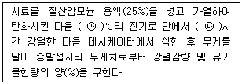
- ㉮ 500±25, ㉯ 2
- ㉮ 600±25, ㉯ 3
- ㉮ 700±30, ㉯ 4
- ㉮ 800±30, ㉯ 5
(정답률: 78%)
51. 다음 중 농도가 가장 낮은 것은?
- 1mg/L
- 1000μg/L
- 100ppb
- 0.01ppm
(정답률: 78%)
52. 반고상 또는 고상 폐기물 내의 기름성분을 분석하기 위해 노말헥산 추출시험방법에 의해 폐기물 양에 약 2.5배에 해당하는 물을 넣고 잘 혼합한 후 pH를 조절한다. 이때 pH 범위는?
- pH 4 이하
- pH 4 ~ 7
- pH 7 ~ 9
- pH 9 이상
(정답률: 54%)
53. 정도보증/정도관리(QA/QC)에서 검정곡선을 그리는 방법으로 틀린 것은?
- 절대검정곡선법
- 검출한계작성법
- 표준물질첨가법
- 상대검정곡선법
(정답률: 59%)
54. 폐기물 용출시험방법에 관한 설명으로 틀린 것은?
- 진탕회수는 매분당 약 200회로 한다.
- 진탕 후 1.0μm 유리섬유여과지로 여과한다.
- 진폭이 4~5cm의 진탕기로 4시간 연속 진탕한다.
- 여과가 어려운 경우 분당 3,000회전 이상으로 20분 이상 원심분리한다.
(정답률: 84%)
55. 기체 크로마토그래피법에 의한 PCBs 시험 시 실리카겔 칼럼을 사용하는 주 목적은?
- PCBs의 흡착
- 시료 중의 수분 흡수
- PCBs 이외의 불순물 분리
- 시료 중의 수용성 염류 분리
(정답률: 69%)
56. 대상 폐기물의 양이 2,000톤인 경우 채취할 현장 시료의 최소수는?
- 24
- 36
- 50
- 60
(정답률: 78%)
57. 다음 설명에 해당하는 시료의 분할 채취 방법은?
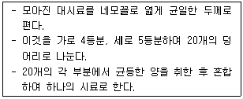
- 구획법
- 교호삽법
- 균등분할법
- 원추4분법
(정답률: 81%)
58. 기체 크로마토그래피-질량분석법에 따른 유기인 분석방법을 설명한 것으로 틀린 것은?
- 운반기체는 부피백분율 99.999% 이상의 헬륨을 사용한다.
- 질량분석기는 자기장형, 사중극자형 및 이온트랩형 등의 성능을 가진 것을 사용한다.
- 질량분석기의 이온화방식은 전자충격법(EI)을 사용하며 이온화에너지는 35 ~ 70eV를 사용한다.
- 질량분석기의 정량분석에는 메트릭스 검출법을 이용하는 것이 바람직하다.
(정답률: 72%)
59. ICP 분석에서 시료가 도입되는 플라스마의 온도 범위는?
- 1,000 ~ 3,000K
- 3,000 ~ 6,000K
- 6,000 ~ 8,000K
- 15,000 ~ 20,000K
(정답률: 77%)
60. 수은을 원자흡수분광광도법으로 측정하는 방법으로 ( )에 옳은 것은?
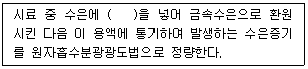
- 아연분말
- 이염화주석
- 염산히드록실아민
- 과망간산칼륨
(정답률: 87%)
4과목: 폐기물 관계 법규
61. 폐기물 감량화시설의 종류에 해당되지 않는 것은?
- 폐기물 재활용시설
- 폐기물 소각시설
- 공정 개선시설
- 폐기물 재이용시설
(정답률: 70%)
62. 의료폐기물 전용 용기 검사기관으로 틀린 것은?
- 한국환경공단
- 한국화학융합시험연구원
- 한국의료기기시험연구원
- 한국건설생활환경시험연구원
(정답률: 64%)
63. 매립시설의 사후관리이행보증금의 산출기준 항목으로 틀린 것은?
- 침출수 처리시설의 가동 및 유지·관리에 드는 비용
- 매립시설 제방 등의 유지·관리에 드는 비용
- 매립시설 주변의 환경오염조사에 드는 비용
- 매립시설에 대한 민원 처리에 드는 비용
(정답률: 67%)
64. 폐기물처리 신고자가 고철을 재활용하는 경우 환경부령으로 정하는 폐기물처리기간은?
- 15일
- 30일
- 60일
- 90일
(정답률: 75%)
65. 지정폐기물 보관 표지판에 기재되는 내용이 아닌 것은?
- 보관방법
- 관리책임자
- 취급 시 주의사항
- 운반(처리) 예정장소
(정답률: 54%)
66. 매립지의 사후관리 기준 및 방법에 관한 내용 중 토양 조사횟수 기준(토양조사방법)으로 옳은 것은?
- 월 1회 이상 조사
- 연 1회 이상 조사
- 매 반기 1회 이상 조사
- 매 분기 1회 이상 조사
(정답률: 51%)
67. 생활폐기물의 처리대행자에 해당되지 않는 자는?
- 한국환경공단
- 폐기물처리업자
- 폐기물처리신고자
- 한국자원재생공사법에 의하여 음식물류 폐기물을 수거하여 재활용하는 자
(정답률: 61%)
68. 의료폐기물을 제외한 지정폐기물의 보관에 관한 기준 및 방법으로 틀린 것은?
- 지정폐기물은 지정폐기물 외의 폐기물과 구분하여 보관하여야 한다.
- 폐유기용제는 휘발되지 아니하도록 밀봉된 용기에 보관하여야 한다.
- 흩날릴 우려가 있는 폐석면은 습도 조절 등의 조치 후 고밀도 내수성 재질의 포대로 2중 포장하거나 견고한 용기에 밀봉하여 흩날리지 아니하도록 보관하여야 한다.
- 지정폐기물은 지정폐기물에 의하여 부식되거나 파손되지 아니하는 재질로 된 보관시설 또는 보관용기를 사용하여 보관하여야 한다.
(정답률: 74%)
69. 대통령령으로 정하는 폐기물처리시설을 설치ㆍ운영하는 자가 그 폐기물처리시설의 설치ㆍ운영이 주변 지역에 미치는 영향을 조사하여야 하는 기간은?
- 1년마다
- 3년마다
- 5년마다
- 10년마다
(정답률: 51%)
70. 특별자치시장, 특별자치도지사, 시장ㆍ군수ㆍ구청장이 수립하는 음식물류 폐기물 발생 억제 계획의 수립주기는?
- 1년
- 2년
- 3년
- 5년
(정답률: 68%)
71. 폐기물처리시설인 매립시설(관리형 매립시설)의 설치검사 시 검사항목에 해당되지 않는 것은?
- 내부진입도로 설치내용
- 차수시설의 재질·두께·투수계수
- 바닥 및 외벽의 압축강도·두께
- 매끄러운 고밀도 폴리에틸렌라이너의 기준 적합 여부
(정답률: 46%)
72. 폐기물관리법에서 사용하는 용어로 틀린 것은?
- “처리”란 폐기물의 소각·중화·파쇄 ·고형화 등의 중간처분과 매립하거나 해역으로 배출하는 등의 최종 처분을 말한다.
- “생활폐기물”이란 사업장폐기물 외의 폐기물을 말한다.
- “폐기물처리시설”이란 폐기물의 중간처분시설, 최종처분시설 및 재활용시설로서 대통령령으로 정하는 시설을 말한다.
- “폐기물감량화시설”이란 생산공정에서 발생하는 폐기물의 양을 줄이고, 사업장 내 재활용을 통하여 폐기물 배출을 최소화하는 시설로서 대통령령으로 정하는 시설을 말한다.
(정답률: 77%)
73. 폐기물관리법상 가연성 고형 폐기물의 에너지 회수기준으로 맞는 것은?
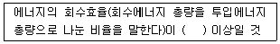
- 65%
- 75%
- 85%
- 95%
(정답률: 82%)
74. 다음은 지정폐기물인 폐페인트 및 폐래커에 관한 기준이다. ( )에 옳은 것은?
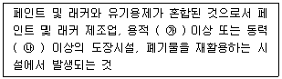
- ㉮ 10세제곱미터, ㉯ 3마력
- ㉮ 10세제곱미터, ㉯ 5마력
- ㉮ 5세제곱미터, ㉯ 3마력
- ㉮ 5세제곱미터, ㉯ 5마력
(정답률: 59%)
75. 설치신고대상 폐기물처리시설의 규모 기준으로 ( )에 옳은 것은?
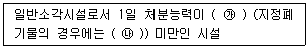
- ㉮ 50톤, ㉯ 5톤
- ㉮ 50톤, ㉯ 10톤
- ㉮ 100톤, ㉯ 5톤
- ㉮ 100톤, ㉯ 10톤
(정답률: 67%)
76. 폐기물처리시설 주변 지역 영향조사 기준 중 조사지점에 관한 기준으로 틀린 것은?
- 미세먼지와 다이옥신 조사지점은 해당 시설에 인접한 주거지역 중 3개소 이상 지역의 일정한 곳으로 한다.
- 악취 조사지점은 매립시설에 가장 인접한 주거지역에서 냄새가 가장 심한 곳으로 한다.
- 토양 조사지점은 매립시설에 인접하여 토양오염이 우려되는 4개소 이상의 일정한 곳으로 한다.
- 지하수 조사지점은 매립시설에 설치된 2개소 이상의 지하수 검사정으로 한다.
(정답률: 67%)
77. 폐기물처리업자 또는 폐기물처리신고자의 휴업ㆍ폐업 등의 신고에 관한 내용으로 ( )에 옳은 것은?
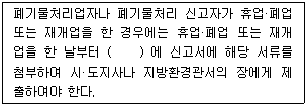
- 10일 이내
- 15일 이내
- 20일 이내
- 30일 이내
(정답률: 77%)
78. 폐기물처리 신고자의 준수사항 기준으로 ( )에 옳은 것은?
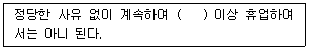
- 6월
- 1년
- 2년
- 3년
(정답률: 82%)
79. 관계 서류나 시설 또는 장비 등을 검사하기 위하여 관계 공무원의 사무소 또는 사업장의 출입·검사를 거부·방해 또는 기피한 자에 대한 과태료 처분기준은?
- 100만원 이하의 과태료
- 200만원 이하의 과태료
- 300만원 이하의 과태료
- 1,000만원 이하의 과태료
(정답률: 75%)
80. 폐기물 처리시설 중 차단형 매립시설의 정기검사 항목이 아닌 것은?
- 축대벽의 안정성
- 소화장비 설치·관리 실태
- 침출수 집배수시설의 기능
- 사용 종료 매립지 밀폐상태
(정답률: 45%)
입경이 2mm일 때, 입도누적 곡선상의 비율은 10%이므로, 이 점은 로그-로그 그래프 상에서 (log(2), log(10))에 위치합니다. 마찬가지로, 입경이 5mm, 10mm, 20mm일 때의 점은 각각 (log(5), log(30)), (log(10), log(60)), (log(20), log(90))에 위치합니다.
이 네 점을 지나는 직선의 기울기를 구하면 곡률계수가 됩니다. 이를 구하기 위해, 먼저 두 점 사이의 기울기를 구합니다. 예를 들어, (log(2), log(10))와 (log(5), log(30))을 지나는 직선의 기울기는 (log(30) - log(10)) / (log(5) - log(2)) = 1.5 입니다.
이렇게 네 개의 점을 지나는 직선의 기울기를 구하면, 이들의 평균값을 구하여 곡률계수를 구합니다. 따라서,
(1.5 + 1.5 + 1.5 + 1.0) / 4 = 1.375
따라서, 곡률계수는 1.375입니다. 이 값이 보기에서 가장 가까운 값은 1.25이므로, 정답은 1.25입니다.